2024
Août
-
31 —
Poneys de Noël à gogo, gloubi-boulga émotionnel et comédie inspirée
 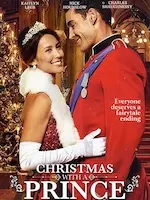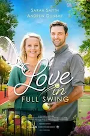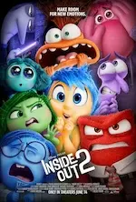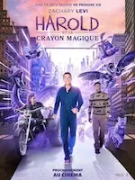♡ La Princesse et le bodyguard, La probabilité statistique de l’amour au premier regard, À Noël mon Prince viendra, Love again, Amoureuse de mon meilleur ami, Vice versa 2, ♡ Harold et le crayon magique
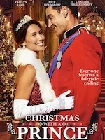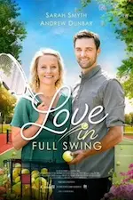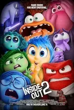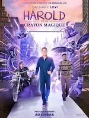♡ La Princesse et le bodyguard, La probabilité statistique de l’amour au premier regard, À Noël mon Prince viendra, Love again, Amoureuse de mon meilleur ami, Vice versa 2, ♡ Harold et le crayon magique -
18 —
Pseudo comédies, presque romance, semblant d’horreur et rencontres
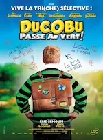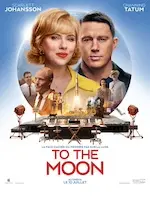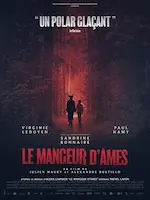
 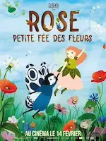Ducobu passe au vert, Jeff Panacloc - À la poursuite de Jean-Marc, To the Moon, Le mangeur d’âmes, Et plus si affinités, Rose - Petite fée des fleurs
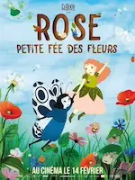Ducobu passe au vert, Jeff Panacloc - À la poursuite de Jean-Marc, To the Moon, Le mangeur d’âmes, Et plus si affinités, Rose - Petite fée des fleurs -
02 —
Romance, drames, comédies et bestioles
 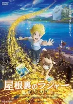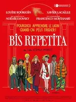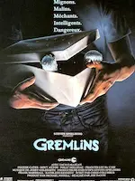♡ Drawing Closer, L’imaginaire, Bis Repetita, Gremlins
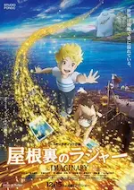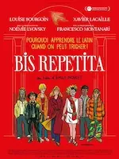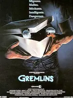♡ Drawing Closer, L’imaginaire, Bis Repetita, Gremlins
Juillet
- 25 — Drama japonais From 5 to 9
-
11 —
Actions & comédie, quelques frissons, poney de Noël et émotions fortes
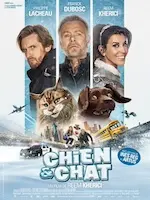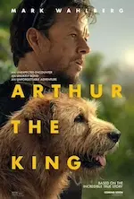Chien et chat, The fall guy, Sleep, Comment rencontrer l’âme sœur en 10 leçons, Love coach malgré moi, Arthur the King
-
05 —
Tournage qui vire au fiasco et intellos asociaux
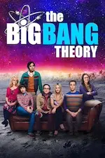Fiasco, The Big Bang Theory
-
04 —
Flics fêlés, aides soignants impliqués, prof dépassé et requins mutants
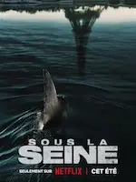Les infaillibles, Maison de retraite 2, Pas de vagues, Sous la Seine
-
04 —
Amis imaginaires, guide à plumes, monstres et rêve plus doux que la réalité
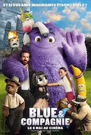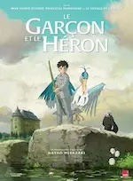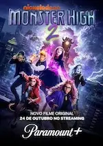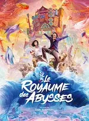Blue et compagnie, Le garçon et le héron, Monster High 2, ♡ Le Royaume des Abysses
Juin
Avril


Mars


Février
-
11 —
Des mentors, de l’amour et un carnage


 ♡ The Tiger’s Apprentice, The Underdoggs, Welcome to Valentine, Blue Eye Samurai
♡ The Tiger’s Apprentice, The Underdoggs, Welcome to Valentine, Blue Eye Samurai -
03 —
Une série et deux films français étonnants


 Le règne animal , Je verrai toujours vos visages, Panda
Le règne animal , Je verrai toujours vos visages, Panda
Janvier
-
28 —
De la magie et des rêves

 Wish - Asha et la bonne étoile , Wonka
Wish - Asha et la bonne étoile , Wonka -
23 —
Magie, art, amour et délire complet


 L'ours montagne, Séraphine, ♡ C'était à Rome, La boutique fantastique
L'ours montagne, Séraphine, ♡ C'était à Rome, La boutique fantastique -
20 —
💖 Quatre courts-métrages d’animation


 ♡ A folded wish, ♡ Windup, ♡ Run Totti run, ♡ Achoo
♡ A folded wish, ♡ Windup, ♡ Run Totti run, ♡ Achoo -
14 —
Films pas tip top


 Spider-man : Across the spider-verse, Les piliers de la Terre, I give my first love to you, Les sous-doués passent le bac, Les Bronzés font du ski
Spider-man : Across the spider-verse, Les piliers de la Terre, I give my first love to you, Les sous-doués passent le bac, Les Bronzés font du ski -
14 —
Trois films d’animation


 ♡ La maison des égarées, Ron débloque, ♡ Magical DoReMi : À la recherche des apprenties sorcières
♡ La maison des égarées, Ron débloque, ♡ Magical DoReMi : À la recherche des apprenties sorcières -
07 —
Des questions sans réponse


 Dream scenario, Le monde après nous, The Fabelmans
Dream scenario, Le monde après nous, The Fabelmans